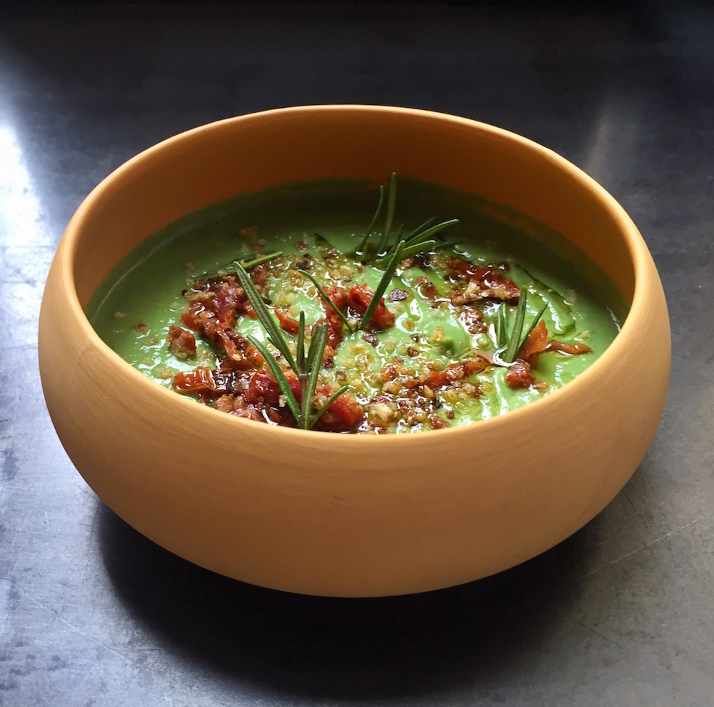

Minestrone

Description
This classic italian dish is packed with nutritious veggies and is absolutely delicious!
Ingredients
- 1 Quart of chicken stock
- 1 Can of Cannelini Beans
- 4-5 Whole tomatoes
- 1 Zucchini
- 3 Carrots
- 3 Celery Stalks
- 1 Onion diced
Steps
- Heat a 1/4 cup of olive oil in pot.
- Dice carrot, onion, and celery and saute for 10 minutes.
- Add the rest of the vegetables and chicken stock.
- Cover and bring to a boil.
- Once it starts boiling, remove the lid and reduce to a simmer and let it cook for 30 minutes